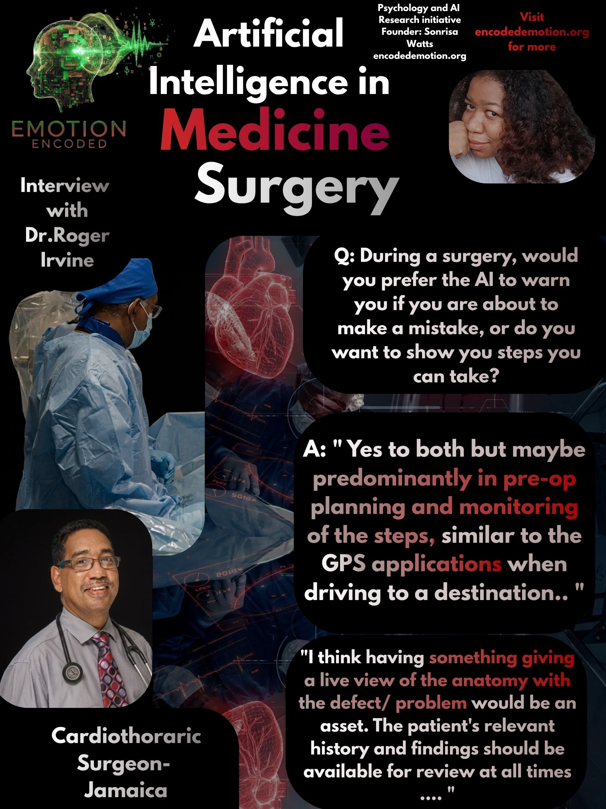

In the high-stakes environment of the operating room where patient outcomes depend on rapid precision, the introduction of artificial intelligence requires a clear approach to trust. Dr. Roger W. Irvine, a Consultant Cardiothoracic Surgeon based in Jamaica, known for his leadership in cardiac rhythm management and complex coronary and valve surgery, shares how surgical work may soon be supported by digital tools.
Question: Do you use any AI tools like ChatGPT or Gemini for any part of your work right now?
"No, I do not use any of the commonly used AI tools in my practice except for those that come up automatically as part of a search or part of any software that I use. I do believe that it is impossible to avoid it these days as AI tools are incorporated in most or all productivity software."
Dr. Irvine notes that AI is now a standard part of his digital tools. While he does not actively seek out conversational AI for clinical tasks, he acknowledges its presence in the software he uses every day. For the surgeon, AI is becoming a normal part of his workflow.
Question: If you had AI in the operating room, would you rather it show you a live map of the heart’s anatomy, or simply pull up the patient’s most important medical records and test results? Neither, or both?
"Both. I think having something giving a live view of the anatomy with the defect/problem would be an asset. The patient's relevant history and findings should be available for review at all times."
Dr. Irvine suggests a vision of the operating room where the surgeon's workload is managed through access to both types of information. He views the integration of real-time anatomical mapping alongside the persistent availability of patient history as an essential asset.
Question: Do you worry that using AI too much might make surgeons forget how to handle emergencies on their own, or do you think the technology will always stay a secondary tool?
"I do not think that it will make surgeons forget how to handle situations but will level the playing field. It will change average or below average practitioners to better surgeons, standardize patient care and improve outcomes. It will allow persons to remain current in their practice."
Rather than fearing a loss of skill, Dr. Irvine sees a potential to improve the quality of care across the field. He suggests that the technology acts as a tool to help standardize care and ensure that surgeons remain current. The concern of over-reliance is replaced by the promise of improved clinical outcomes.
Question: During a surgery, would you prefer the AI to warn you if you are about to make a mistake, or do you want it to show you steps you can take?
"Yes to both but maybe predominantly in pre-op planning and monitoring of the steps, similar to the GPS applications when driving to a destination. (If we disagree with the AI management, we do not have to follow the suggestion)"
Dr. Irvine compares the utility of AI to modern navigation tools. He envisions a surgical future where AI provides proactive monitoring and step-by-step guidance. Crucially, he maintains the surgeon's ultimate authority: if the machine suggestion conflicts with clinical judgment, the human surgeon retains the power to ignore it.
RESEARCH VERDICT
The cardiothoracic surgeon views AI as a useful navigator rather than a replacement for human skill. Dr. Irvine’s perspective suggests that AI will succeed by providing a constant, standardized stream of anatomical and historical data. Trust is conditional and navigational; the AI provides the path, but the surgeon remains the pilot who can deviate when necessary.
Sonrisa Watts // Emotion Encoded // 2026